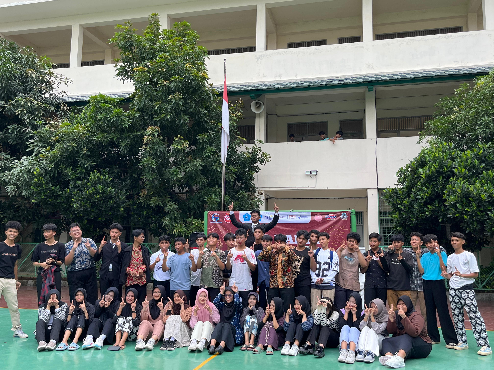
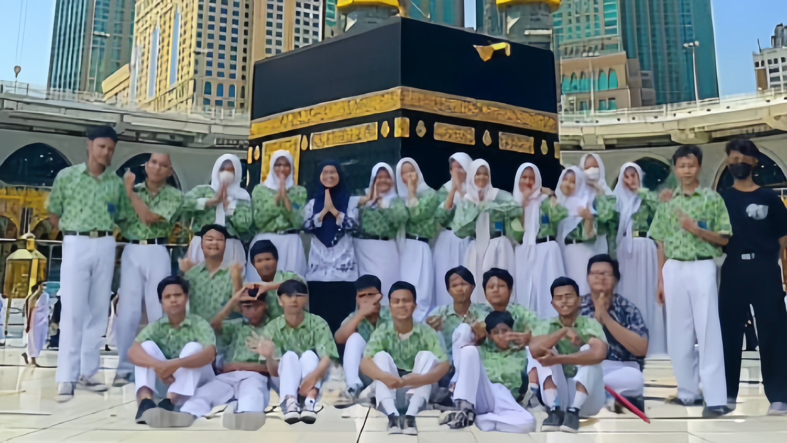

Hot News

Toge Team bangkit dari kubur
Siswa berprestasi dari SMK Mutiara Insan Nusantara kembali mengharumkan...
Baca lebih lanjut...
Seminar dari Aa Zidan
Di era digital yang semakin berkembang, media sosial menjadi salah satu alat...
Baca lebih lanjut...

Karya terakhir kelas 10
Kelas 10 SMK Mutiara Insan Nusantara baru-baru ini berhasil menciptakan sebuah karya
Baca lebih lanjut...

GEMPAR! Murid-murid SMK Yayasan Mutiara Insan Nusantara melaksanakan ibadah haji
Sejumlah murid SMK Mutiara Insan Nusantara baru-baru ini mencapai pencapaian yang luar biasa dengan...
Baca lebih lanjut...